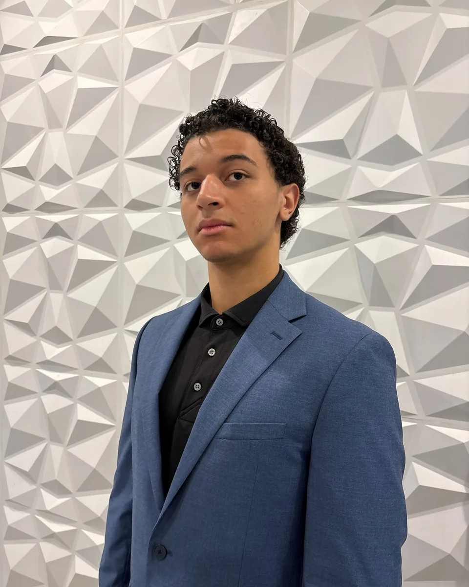

About me
I specialize in UX design and human-computer interaction. I study computer science with a data science concentration at Florida Gulf Coast University (graduating May 2027) and work there as a research assistant to HCI researcher Dr. Md Baharul Islam.
I grew up speaking Portuguese and English and work in Spanish. I'm Treasurer of the IEEE FGCU Student Branch, which sponsored TechX Florida 2026 and paid for student transportation, and I hold an amateur radio license, KQ4TAL.
- Design and researchUser interviews, human-subjects study design, NASA TLX, SSQ, usability testing, accessibility, rapid prototyping
- HardwareESP32-S3, PlatformIO, BLE, I2C, SPI, JTAG, PCB design (EasyEDA, JLCPCB), 3D printing (Tinkercad, Inkscape)
- XR and 3DUnreal Engine, Unity, SteamVR and OpenVR, Three.js, React Three Fiber
- CodePython, TypeScript, React, Swift, C and C++, Dart and Flutter, MediaPipe, OpenCV
- AI and dataAgentic AI workflows, RAG, LLM structured outputs, Databricks, scikit-learn, XGBoost, OR-Tools
- CertificationsCompTIA CSIS, Security+, Network+, A+ · Six Sigma Yellow Belt · FCC amateur radio, Technician
Research and recognition
Five hackathon challenge wins, one paper, one patent filing.
- Paper · first authorJerk-Triggered Bone-Conducted Vibration for VR Cybersickness MitigationD. Ray Filho, M. B. Islam · IEEE ICIICE 2026
- PatentVR cybersickness wearableProvisional patent filed by FGCU, co-inventor, pursuing utility patent.
- TalkFGCU AI DayPresented the cybersickness wearable
- Awards1st Overall and Arthrex Challenge, EagleHacks 20261st, NextEra Drone Challenge, KnightHacks 2025 · 3rd, EagleHacks 2025 · 3rd, NextEra "Win the Summer With AI" 2026
More projects
| Project | Result | What I built | Stack |
|---|---|---|---|
| GridWatchKnightHacks, Oct. 2025 | 1st Place KnightHacks 2025, NextEra Drone Optimization Challenge | An OR-Tools routing solver that fits pole waypoints into the fewest drone missions under a 37,725 ft battery cap, with Dijkstra path expansion | Python, OR-Tools, NumPy |
| Sleep apnea from ECGApr. 2026 | 0.70 AUC-ROC | A leakage-free XGBoost pipeline on 70 PhysioNet ECG recordings, with heart-rate-variability features and grouped cross-validation | Python, XGBoost, scikit-learn |
| HandwritioEagleHacks, Feb. 2025 | 3rd Place, EagleHacks 2025 | The Flutter front end that shows Azure OCR results of handwriting from a Flask back end | Flutter, Dart, Azure OCR |